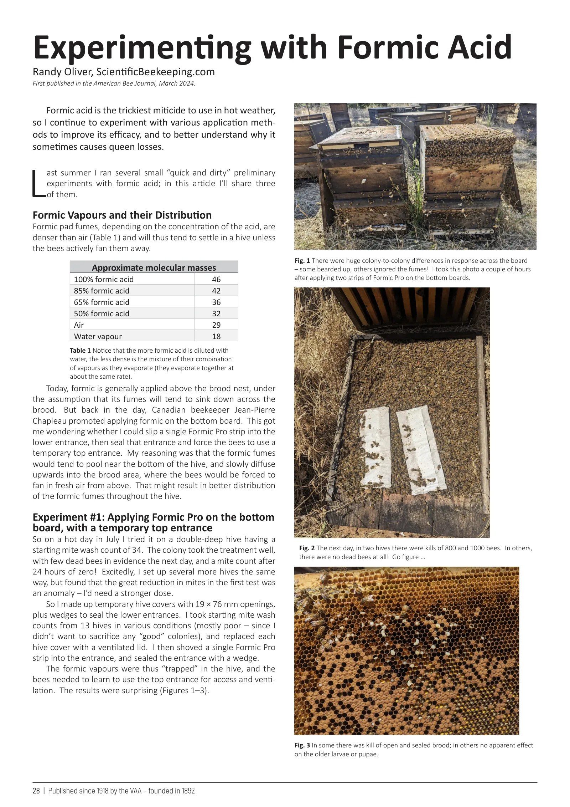

28 | Published since 1918 by the VAA – founded in 1892
Experimenting with Formic Acid
Randy Oliver, ScientificBeekeeping.com
First published in the American Bee Journal, March 2024.
Formic acid is the trickiest miticide to use in hot weather,
so I continue to experiment with various application meth-
ods to improve its efficacy, and to better understand why it
sometimes causes queen losses.
L
ast summer I ran several small “quick and dirty” preliminary
experiments with formic acid; in this article I’ll share three
of them.
Formic Vapours and their Distribution
Formic pad fumes, depending on the concentration of the acid, are
denser than air (Table 1) and will thus tend to settle in a hive unless
the bees actively fan them away.
Approximate molecular masses
100% formic acid
46
85% formic acid
42
65% formic acid
36
50% formic acid
32
Air
29
Water vapour
18
Table 1 Notice that the more formic acid is diluted with
water, the less dense is the mixture of their combination
of vapours as they evaporate (they evaporate together at
about the same rate).
Today, formic is generally applied above the brood nest, under
the assumption that its fumes will tend to sink down across the
brood. But back in the day, Canadian beekeeper Jean-Pierre
Chapleau promoted applying formic on the bottom board. This got
me wondering whether I could slip a single Formic Pro strip into the
lower entrance, then seal that entrance and force the bees to use a
temporary top entrance. My reasoning was that the formic fumes
would tend to pool near the bottom of the hive, and slowly diffuse
upwards into the brood area, where the bees would be forced to
fan in fresh air from above. That might result in better distribution
of the formic fumes throughout the hive.
Experiment #1: Applying Formic Pro on the bottom
board, with a temporary top entrance
So on a hot day in July I tried it on a double-deep hive having a
starting mite wash count of 34. The colony took the treatment well,
with few dead bees in evidence the next day, and a mite count after
24 hours of zero! Excitedly, I set up several more hives the same
way, but found that the great reduction in mites in the first test was
an anomaly – I’d need a stronger dose.
So I made up temporary hive covers with 19 × 76 mm openings,
plus wedges to seal the lower entrances. I took starting mite wash
counts from 13 hives in various conditions (mostly poor – since I
didn’t want to sacrifice any “good” colonies), and replaced each
hive cover with a ventilated lid. I then shoved a single Formic Pro
strip into the entrance, and sealed the entrance with a wedge.
The formic vapours were thus “trapped” in the hive, and the
bees needed to learn to use the top entrance for access and venti-
lation. The results were surprising (Figures 1–3).
Fig. 1 There were huge colony-to-colony differences in response across the board
– some bearded up, others ignored the fumes! I took this photo a couple of hours
after applying two strips of Formic Pro on the bottom boards.
Fig. 2 The next day, in two hives there were kills of 800 and 1000 bees. In others,
there were no dead bees at all! Go figure …
Fig. 3 In some there was kill of open and sealed brood; in others no apparent effect
on the older larvae or pupae.